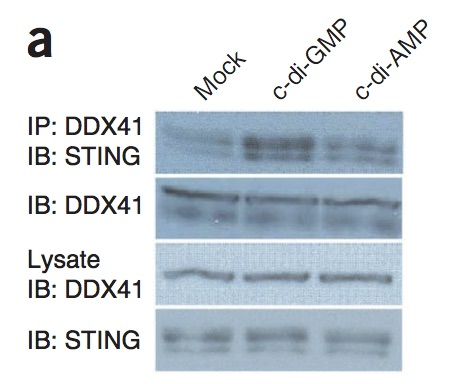

Pathway Logic Experiment Types
Here we describe working with the different assay types within the Pathway Logic database and how this might fit in to a KEfED-based strategy.
2015
- Coprecipitation Frames v2
- List of Experimental Motif Types + Definitions
- KEfED Database Construction
2014
- KEfED Modeling of Coprecipitation Ras Papers
- Initial Extraction Study of Results-Based Epistemics
- Pathway Logic Experiment Types
- Building a Database of Observations from Result Text
- Deploying the BioScholar System
- Reading Against a Model of Experimental Evidence
- Developing NL Annotations for KEfED Elements
- Epistemics and Fragments
- Generating the Big Mechanisms Evaluation Corpus
- A Generative Story for Scientific Text from Experimental Data
Based on our simple parsing of html forms from the Pathway Logic database, we have identified ~1966 papers that have been curated into their system.
Of these 1966, only 73 are available in the open access dataset. Here, we list these by assay type. These are also listed in the digital library under the Corpus labeled PathwayLogicFullText.
| Assay | # papers in OA |
| coprecipitation | 33 |
| Phosphorylation | 28 |
| ProteinExpression | 14 |
| inVitroKinase | 13 |
| location | 13 |
| mRNAExpression | 13 |
| InFraction | 12 |
| SnaggedBy | 11 |
| directProteinBinding | 9 |
| OligoBinding | 6 |
| Oligomerization | 6 |
| GTPAssoc | 5 |
| SurfaceExpression | 4 |
| Ubiquitination | 4 |
| Upshift | 4 |
| GenePromoterReporter | 3 |
| chromatin | 3 |
| colocalization | 3 |
| gal4binding | 3 |
| inVitroGEFActivity | 3 |
| Polymerization | 1 |
| acetylation | 1 |
| inVitroHat | 1 |
| inVitroPPhase | 1 |
| methylation | 1 |
| GTPHydrol | 0 |
| Neddylation | 0 |
| NuclearExport | 0 |
| NuclearImport | 0 |
| ProteinStability | 0 |
| cleavage | 0 |
| gdpDissosc | 0 |
| internalization | 0 |
Since Coprecipitation is the largest contributor in this list, we now list all figures from the OA data set that describe Coprecipitation experiments. This provides an initial training set that we may now attempt to model and understand with
| pmid | figure |
| 23142775 | -Fig-5a |
| 23142775 | -Fig-5b |
| 10790433 | -Fig-9a |
| 18583988 | -Fig-2e |
| 19274086 | -Fig-4d |
| 19274086 | -Fig-4b |
| 22833096 | -Fig-2d |
| 22833096 | -Fig-2a |
| 22833096 | -Fig-2c |
| 14517278 | -Fig-3b |
| 10790433 | -Fig-8a |
| 10871282 | -Fig-4b |
| 10790433 | -Fig-7e |
| 11524436 | (D) |
| 16520382 | -Fig-2a |
| 11777939 | -Fig-7a |
| 7561682 | -Fig-1a |
| 16717130 | -Fig-1d |
| 11864996 | -Fig-5c |
| 11777939 | -Fig-5[tl] |
| 10871282 | -Fig-1d |
| 10871282 | -Fig-2b |
| 19783983 | -Fig-5a |
| 19783983 | -Fig-5b |
| 9625770 | -Fig-3a |
| 10601358 | -Fig-5c |
| 15767370 | -Fig-1a,1c |
| 15767370 | -Fig-1a |
| 18583988 | -Fig-4b |
| 9625770 | -Fig-2a |
| 18411307 | -Fig-1a |
| 18411307 | -Fig-1c |
| 18411307 | -Fig-2c |
| 18411307 | -Fig-1e |
| 18411307 | -Fig-7a |
| 15314656 | -Fig-4a |
| 19734906 | -Fig-6c |
| 19734906 | -Fig-6b |
| 12515821 | -Fig-S1b |
| 12515821 | -Fig-1a |
| 12515821 | -Fig-1e |
| 12515821 | -Fig-3a |
| 20337593 | -Fig-2b |
| 16520382 | -Fig-2d |
| 16520382 | -Fig-2e |
| 16520382 | -Fig-2b |
| 22833096 | -Fig-2b |
| 14517278 | -Fig-6c |
| 14517278 | -Fig-6b |
| 23142775 | -Fig-S4a |
| 12370254 | -Fig-2a |
| 19783983 | -Fig-S2a |
| 20337593 | -Fig-2a |
| 16492808 | -Fig-1c |
| 19234442 | -Fig-3e |
| 19234442 | -Fig-2b |
| 19234442 | -Fig-5d |
| 19234442 | -Fig-5c |
| 19234442 | -Fig-3b |
| 19234442 | -Fig-2a |
| 19234442 | -Fig-3d |
| 19234442 | -Fig-5e |
| 19234442 | -Fig-5f |
| 20026654 | -Fig-4b |
| 20026654 | -Fig-4a |
| 19274086 | -Fig-4a |
| 21573184 | -Fig-2a |
| 21573184 | -Fig-3a |
| 21573184 | -Fig-3b |
| 21573184 | -Fig-3c |
| 21573184 | -Fig-S1c |
| 21573184 | -Fig-1a |
| 21573184 | -Fig-1c |
| 16729043 | -Fig-5b |
| 11777939 | -Fig-4a |
| 10871282 | -Fig-3b |
| 19675569 | -Fig-3b |
| 10601358 | -Fig-3b |
| 11777939 | -Fig-8c |
| 11777939 | -Fig-8a |
| 11777939 | -Fig-8b |
| 19734906 | -Fig-6a |
| 12515821 | -Fig-3c |
| 11777939 | -Fig-1c |
| 11777939 | -Fig-1b |
| 11777939 | -Fig-3b |
| 16520382 | -Fig-2c |
| 19112497 | -Fig-2d |
| 19112497 | -Fig-1d |
| 19112497 | -Fig-1c |
| 19112497 | -Fig-1b |
| 19112497 | -Fig-2c |
| 21629263 | -Fig-6c |
| 21629263 | -Fig-6d |
| 19050761 | -Fig-5j |
| 19050761 | -Fig-1c |
| 18215320 | -Fig-S1 |
An example of coprecipitation is shown below:
From Parvatiyar-2012-13-1155 (pmid: 23142775), Fig-5a
From page 1159, narrative text:
The introduction of either c-di-GMP or c-di-AMP into D2SC cells led to enhanced formation of the DDX41-STING complex (Fig. 5a).
Based on this figure:

After manual curation, this provides this model:
This model generates this KEfED data structure:

Which when represented as a data structure looks like this:
?protein-concentration
[?cell-type][?reagent][?duration][?primary-antibody][?primary-antibody]
The experiment shows the behavior of DDX41 / STING complex concentration based on this value (which corresponds is the top row of the figure).
?protein-concentration
[D2SC][?reagent][4h][DDX41][STING]
See this link for definitions of Pathway Logic Assays: http://pl.csl.sri.com/CurationNotebook/index.html
Identifying the most relevant assays for Ras-based work.
From the 71 “open access” pmids, there are 1716 datums. 24 have Hras, Braf, Raf1 or Rac1 as subject.
These come from 8 papers: [16492808, 11448999, 11777939, 12515821, 19050761, 20929976, 16520382, 12876277]
The majority of these were about Rac1
They include the following assays [copptby, GTP-association, phos, boundto, IVKA]
Highest priority assays
- coprecipitation
- Phosphorylation
- ProteinExpression
- inVitroKinase
- location
- GTPAssoc
Open Access Phosphorylation Papers
23142775 19274086 10790433 18604198 16717130 19112497 12876277 8376945 12654898 16984645 17470642 17101693 19953085 22833096 16461339 15767370 9625770 21629263 15320955 19675569 18411307 18583988 11483158 19234442 19783983 15314656 20026654 16618811